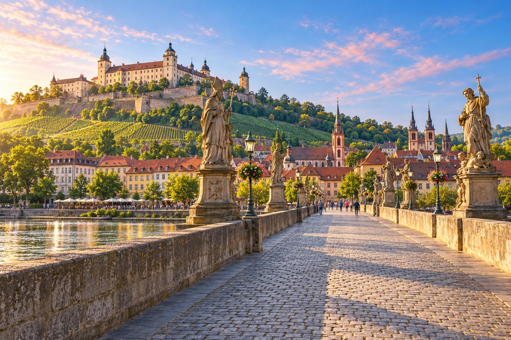
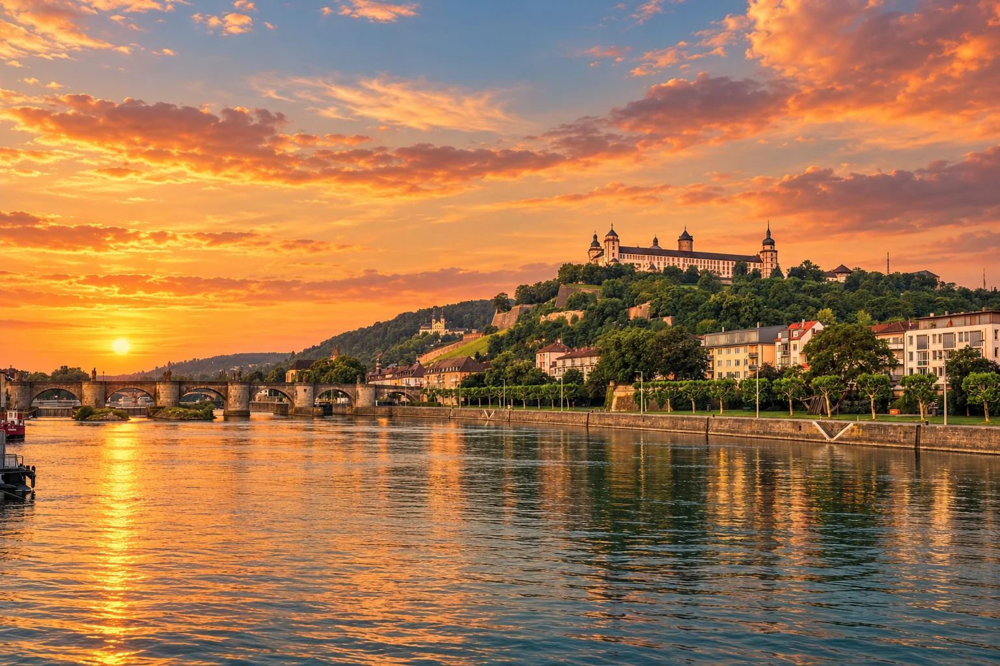
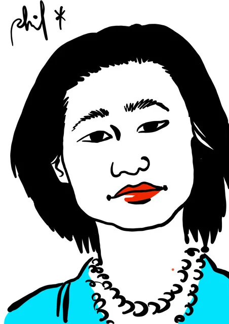
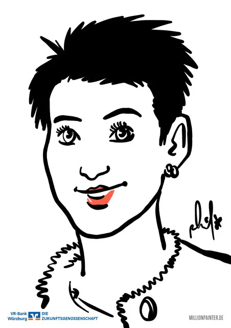
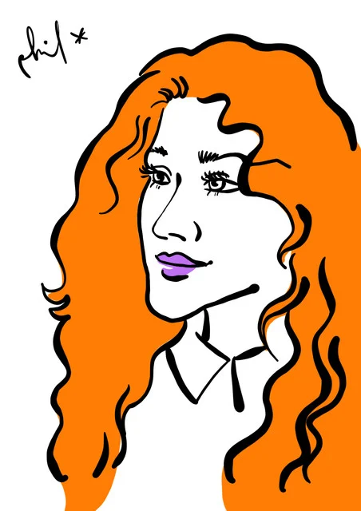

AI01
川 · 要塞 · ブドウ畑の風景
アルテ・マイン橋と要塞
バロックの石像の間を歩き、ブドウ畑の上にそびえるマリエンベルク要塞を眺めて。橋のアーチと街の線は、似顔絵のデザインのヒントにも。
見学情報を見る ↗
ヴュルツブルクを歩き、PHIL SPLASHに会おう。
日本や中国からドイツ旅行へ。ヴュルツブルクで、Phil SplashにiPadで似顔絵を描いてもらいませんか。グループでのライブ制作や、出発前に写真からの制作を相談できます。
日本・中国からの団体旅行に、特別な立ち寄りを
日本や中国からのグループ旅行に、地元の似顔絵アーティストPhil Splashとの出会いを。PhilはiPadとApple Pencilでその場で描き、完成した似顔絵を画面でお見せします。ホテルなど、事前に合意した会場で旅の特別なひとときを楽しめます。
10名様から · 団体向け個別お見積もり
団体での予約を相談 ↗事前予約制。集合場所や必要な会場許可は個別に確認します。
仲間と楽しむ、特別な旅のひととき。
AIで制作した体験イメージです。実際の依頼・イベントの記録写真ではありません。会場と必要な許可は個別に相談します。
Phil Splash、本名Philipp Mulfingerは、ヴュルツブルクを拠点に活動するアーティスト兼デザイナー。肖像プロジェクトは2010年、ミュンヘンの地下鉄で始まりました。旅先での出会い、イベント、オーダー制作を通して、100万人を描くことを目指しています。
国際的なイベントでも活動し、文化を越えて人々をつなぐPhil。あなたのバイエルン旅行も、本人が描く一枚の肖像で、その物語の一部になります。
ヴュルツブルクの似顔絵デザイン案
顔、Philらしい線、一緒に選ぶ街のモチーフ。ヴュルツブルクを自分らしく覚えておくための一枚です。旅行前に写真からの似顔絵をご相談いただくか、団体でライブ制作をご予約ください。下の街のデザインは、ご相談のためのアイデアです。
主役はあなたの似顔絵。最下部には、アルテ・マイン橋から要塞へ続く一つの風景を、控えめなグレーの線だけで添えます。
写真からの似顔絵・1点
写真からの似顔絵は1点30ユーロ。街を組み合わせた2点は、Philの原画をもとにAIで制作した案です。背景・形式・デジタルでの受け渡し・追加制作は注文前に相談します。
デザインの方向を選ぶ
詳細を相談し、写真を送る
旅を自分だけの思い出に
日本・中国からドイツを訪れる皆さまへ
大都市をめぐる旅の合間に、バロックの庭園、ブドウ畑の眺め、マイン川のほとりの時間を。ロマンチック街道の起点から、あなたらしいドイツの物語を始めましょう。「100万人の肖像」を目指す Phil Splash との出会いが、街の思い出を一枚の似顔絵につなげます。
ヴュルツブルクで訪ねたい風景
橋、レジデンツ、旧市街を軸に歩く一日。丘の上のマリエンベルク要塞が、その街を見守ります。それぞれの魅力をご紹介します。
開館時間や見学条件は訪問前に公式情報をご確認ください。マリエンベルク要塞の一部は修復中です。このサイトでは名所の入場券や市内ガイドツアーを販売していません。
AIマーク付きの画像は生成イメージです。ギャラリーはiPad似顔絵体験の提案で、過去のイベント写真ではありません。人物のいない街の風景も芸術的な表現です。
アーティスト本人の線
こちらは実際にPhilが描いた作品です。上の街のデザインは、そこから広がるアイデアをご紹介しています。



言葉を越えて伝わるもの
Phil自身のチャンネルから2本の映像をご紹介。Portraits 4 Freeと、ベトナムでの出会いをご覧ください。
バイエルン柄のスーツとスケッチブック、そして笑顔。
一枚の絵が、どこでも会話のきっかけに。
YouTubeが利用できない場合も、作品ギャラリーとお問い合わせフォームをご利用いただけます。
FAQ
バロック建築、川沿いの旧市街、ロマンチック街道の起点に魅力を感じたら、ヴュルツブルクをドイツ旅行の予定に加えてみてください。Würzburg Momentsは日本・中国からの旅行者を意識し、日本語・中国語でもご案内します。Phil Splashの似顔絵体験は、旅の個人的な思い出として別途ご相談いただけます。
レジデンツ、アルテ・マイン橋、マリエンベルク要塞の観光に加え、Phil Splashのプライベート似顔絵体験をご相談いただけます。ライブ制作は10名様から。空き状況と会場の確認が必要です。
写真からの制作は1点30ユーロです。ライブ制作やまとまった写真オーダーは個別にお見積もりします。形式、背景のご希望、追加サービスはご注文前に確認します。
はい。まず訪問日、作品数、ご希望の完成日をお知らせください。詳細の合意後、参考写真をメールでお送りください。使用する権利のある写真のみをご提供ください。
マリエンベルク要塞など、ヴュルツブルクらしい背景をご相談いただけます。デザイン、形式、追加作業の有無はPhilとご相談ください。このサイトの合成イメージはレイアウトの一例です。
予約なしで訪問できるアトリエや、定期的な路上制作の予定はありません。ヴュルツブルクやマインフランケンの適切なホテル・会場で実施を相談できます。バイエルン州内の他の場所もお問い合わせください。日時・場所・必要な許可の確認が必要です。
日本語、中国語、英語、ドイツ語でお問い合わせいただけます。ご希望の言語をお知らせください。当日の通訳は、明確に合意した場合のみ含まれます。
スタイル、人数、旅程によって異なります。紙またはデジタル形式、直接の受け取りまたはデジタルでのお渡しを事前に相談します。当日完成や自動的な予約確定はお約束していません。
あなただけの旅の思い出を
ご希望をPhilにお聞かせください。info@phil-splash.de宛てのメール下書きを作成します。お問い合わせだけで契約は成立せず、詳細の合意後に予約・注文を確定します。
info@phil-splash.de ↗Philへ直接メールする